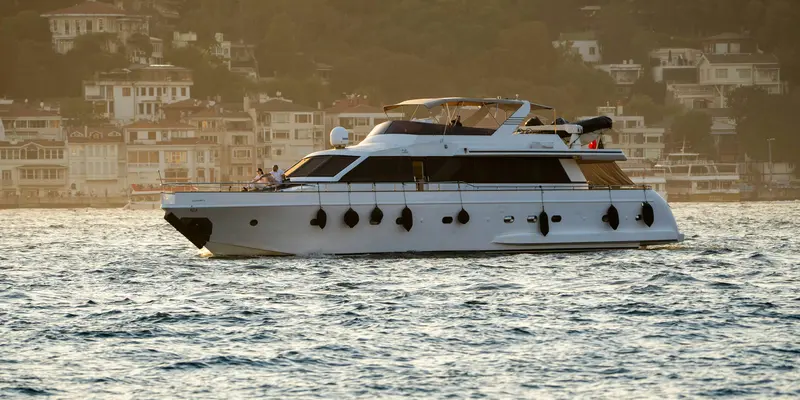
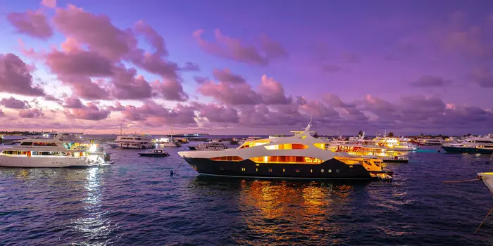

Catalogue flotte
Fiches yachts détaillées avec galerie immersive
Chaque yacht présenté avec photos haute qualité, caractéristiques, tarifs et disponibilités. Le client visualise sa future sortie — et demande à réserver.
Vos clients cherchent un yacht sur Google avant de vous appeler. Sans site rapide et haut de gamme, ils réservent ailleurs. Votre flotte mérite une vitrine à sa hauteur.

Un client qui
cherche un yacht ne compare pas 10 sites.
Il réserve chez le premier qui lui donne envie de
naviguer.
Sans site visible sur "location yacht + votre ville", vous êtes absent. Chaque semaine de charter non vendue, c'est du chiffre d'affaires perdu — et un client parti chez la concurrence.
Un site pensé pour le yachting : catalogue de flotte avec fiches détaillées, demande de réservation en ligne, galerie immersive. Codé à la main, multilingue, optimisé pour Google.

Chaque yacht présenté avec photos haute qualité, caractéristiques, tarifs et disponibilités. Le client visualise sa future sortie — et demande à réserver.
Votre site apparaît en premier sur "location yacht Saint-Tropez", "charter voilier Var", "louer un bateau Côte d'Azur". Là où vos clients cherchent.
Un site élégant, rapide et multilingue FR/EN à la hauteur de votre clientèle internationale. Premier contact = première impression qui compte.
Il voit votre site avant de voir votre bateau.
Un site amateur = un client qui passe son chemin.
Un site premium = un carnet de réservations plein.
Un bon site de location de yacht repose sur 3 éléments : catalogue de flotte, design premium, déclenchement de demande.
C'est exactement ce que je construis. Pas un template générique — un outil pensé pour votre flotte, votre zone et votre clientèle internationale en Méditerranée.
Note : L'hébergement et le nom de domaine sont à votre charge. Vous restez propriétaire à 100% de votre site.
J'accompagne les professionnels du charter dans tout le Var 83 et la Côte d'Azur. Chaque port a sa propre page SEO pour capter les demandes locales et internationales.
Port emblématique de la Méditerranée, clientèle internationale haut de gamme.
Site charter Saint-Tropez →En face de Saint-Tropez, port actif, forte demande estivale.
Site charter Sainte-Maxime →Grand port de plaisance, accès direct aux îles de Lérins.
Site charter Saint-Raphaël →Rade de Toulon, deuxième base navale de France, plaisance active.
Site charter Toulon →Port de Fréjus, 54 000 habitants, accès mer et arrière-pays.
Site charter Fréjus →Cavalaire · Hyères · Bandol · La Ciotat · Côte d'Azur…
Création site Var →Le site internet pour une activité de location de yacht est sur devis selon votre flotte et vos besoins. Comptez à partir de 1 300€ pour un site avec catalogue. Devis gratuit sous 24h.
Oui. La majorité des clients cherchent et comparent en ligne avant de contacter. Sans site visible et premium, vous perdez ces contacts au profit de vos concurrents.
Oui. H1 géolocalisé, Schema.org LocalBusiness, Google Business Profile. Vous apparaissez avant les plateformes de réservation génériques.
Site Premium en 2 semaines. Site Ultra en 3 à 4 semaines. Délai garanti dans le devis.